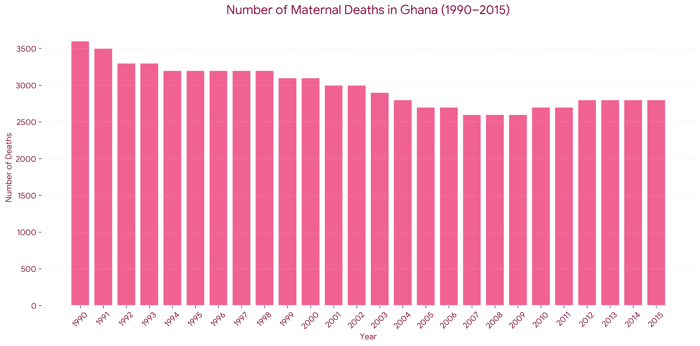
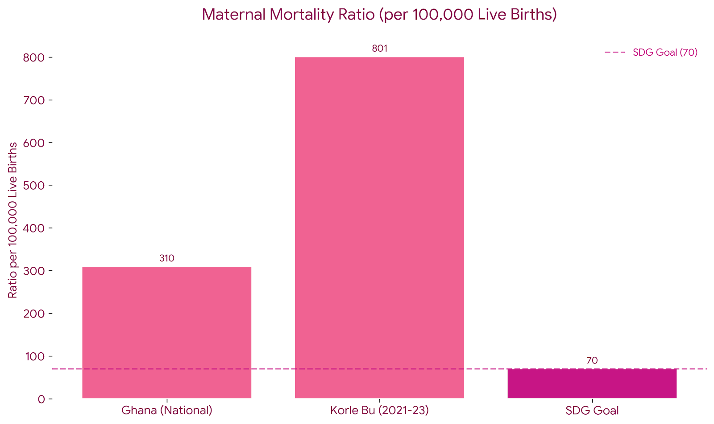

Gender based healthcare inequities are another important but often overlooked part of No Bed Syndrome. The way people are treated in medical settings is not always neutral, and gender can shape how seriously someone's symptoms are taken or how quickly they receive care.
Graph 1: Maternal Death Trends

Maternal death trends showing the impact of healthcare access barriers on
maternal mortality rates over time.
Source: Parliament
Report
Graph 2: Maternal Mortality Analysis

Comprehensive analysis of maternal mortality factors
Source: MyJoy
Online | NCBI
Study
Understanding Gender-Based Healthcare Inequities
These statistics show how women's health risks are tied to the broader conditions that produce No Bed Syndrome in Ghana. Although maternal deaths decreased somewhat between 1990 and 2015, the numbers are still high, which reflects how difficult it can be for many women to receive timely care during pregnancy and childbirth. The maternal mortality ratio makes this gap even clearer. While the national rate sits around 310 deaths per 100,000 live births, places like Korle Bu Teaching Hospital have reported figures as high as 801, far above the target of 70 set under the United Nations Sustainable Development Goals. These numbers show how delays in care, overcrowded maternity wards, and the lack of available beds can directly affect women who need urgent treatment. In situations where hospitals are already overwhelmed, women experiencing complications during pregnancy or childbirth can end up waiting for care that should be immediate. In that sense, maternal mortality also reflects a form of structural and gendered violence, where the health needs of women are forced to move through the same strained system that produces No Bed Syndrome.